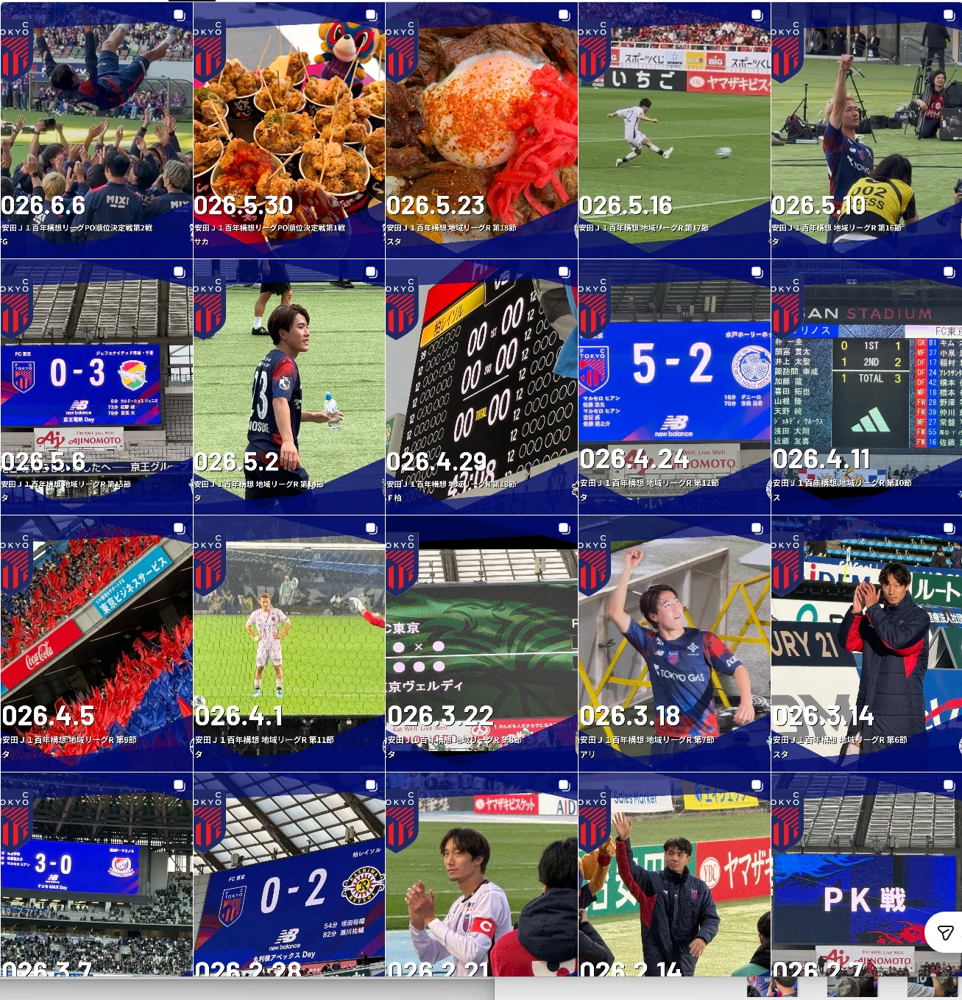

試合と選手
ピッチ、ゴール、スコアボード、試合後の挨拶など、スタジアムで見た瞬間。
試合の日に見たもの、食べたもの、感じた空気。FC東京の観戦写真と動画は、 Instagramにまとめています。最新の観戦記は、プロフィールからご覧ください。
※このページの一覧画像はイメージです。最新の投稿内容はInstagramでご確認ください。

勝敗だけでは残らない、その日の景色を写真と動画で記録しています。
ピッチ、ゴール、スコアボード、試合後の挨拶など、スタジアムで見た瞬間。
ゴール裏、遠征先、演出、スタンドの風景。その日だけの雰囲気。
スタジアムや遠征先で食べたものも、観戦の大切な記憶として残しています。
LATEST MATCHDAYS